SUPPLEMENT 05.1 · MOLECULAR ORBITALS FOR LIGAND FIELD THEORY
配体场理论的分子轨道解释
用第 05 课的群轨道方法，解释配合物的 d 轨道分裂、自旋与几何。
FROM MO TO LIGAND FIELD
1. 本专题在第 05 课中的位置
第 05 课已经建立了 LCAO、对称性匹配与 SALC 的一般方法。本专题不重复双原子分子，而把同一套方法用于金属配合物：先组合配体轨道，再与金属 s、p、d 轨道匹配，最后从金属成分较大的轨道解释自旋、磁性与几何。
晶体场模型用静电作用描绘 d 轨道分裂；这里的配体场 MO 图像进一步讨论共价混合与配体 π 作用。相同点群决定允许的相互作用类型，不意味着所有配合物的能级间距、共价程度和轨道顺序完全相同。
OCTAHEDRAL · SIGMA
2. 八面体：六个配体轨道与哪些金属轨道匹配？
令六个相同配体位于 ±x、±y、±z 方向，理想构型属于 Oh。每个配体选择一个朝向金属的 σ 给体轨道，共六个基函数。它们的可约表示分解为：
| 金属轨道 | Oh 对称性 | 在纯 σ 模型中的作用 |
|---|---|---|
| s | A1g | 与全同相的配体 SALC 匹配 |
| px、py、pz | T1u | 与三组反相的对向配体组合匹配 |
| dz²、dx²−y² | Eg | 朝向配体，σ 作用显著 |
| dxy、dxz、dyz | T2g | 无对应 σ SALC，在该近似下非键 |
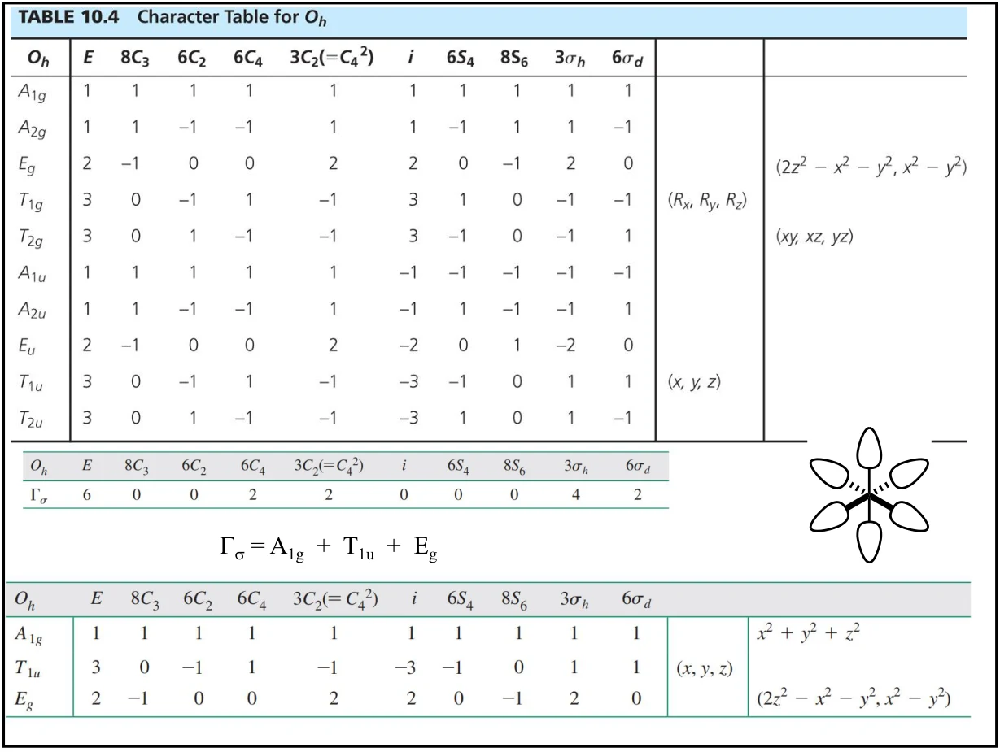
“对称允许”不等于一定强烈混合，还须有合适的能量接近程度和有效重叠。大写表示标签用于轨道组的对称种类，小写用于具体 MO 能级标签。
SYMMETRY-ADAPTED COMBINATIONS
3. 六个 σ SALC：归一化与维数守恒
以 L+x、L−x 等表示六个归一化且近似互不重叠的配体基函数，约定指向金属的一瓣同相。A1g 组合为全同相叠加；T1u 的三分量为三个坐标方向的差组合。Eg 则与两个 d 轨道的空间符号相匹配。
| 对称种类 | 一种归一化组合（其余由对称性得到） |
|---|---|
| A1g | L+x + L−x + L+y + L−y + L+z + L−z√6 |
| T1u 的 x 分量 | L+x − L−x√2 |
| Eg 的 x²−y² 分量 | L+x + L−x − L+y − L−y2 |
| Eg 的 z² 分量 | 2L+z + 2L−z − L+x − L−x − L+y − L−y√12 |
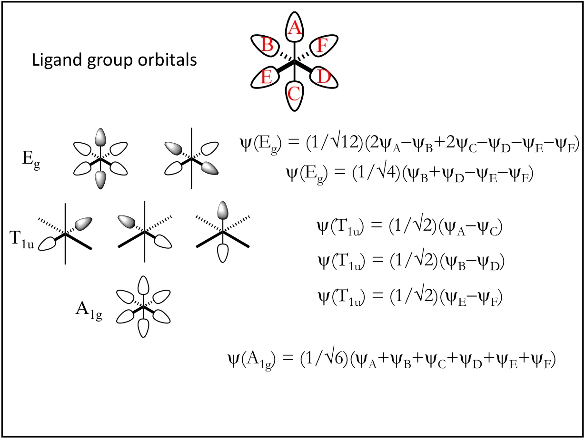
检查每个组合的系数平方和为 1，组合之间的系数点积为 0。整体乘以 −1 不改变轨道；简并子空间内还可选择另一组正交基。因此图中瓣的颜色或排列与这里不同，不一定是错误。
ORBITAL AND ELECTRON COUNTING
4. 完整 σ 图与“只看 d 电子”的简图
六个匹配的金属 AO 与六个配体 SALC 组合，得到六个成键和六个反键 MO；另外三个金属 t2g 轨道在纯 σ 模型中保留为非键轨道。总数是 9 个金属价轨道 + 6 个配体轨道 = 15 个 MO，没有凭空增加轨道。
六个配体各提供一对电子，通常先填满六个较低的 σ 成键 MO。此后金属的 dn 电子填入主要具有金属 d 性质的 t2g 与 eg*。eg* 对金属–配体 σ 键是反键的，不要把它当作另两条成键轨道。
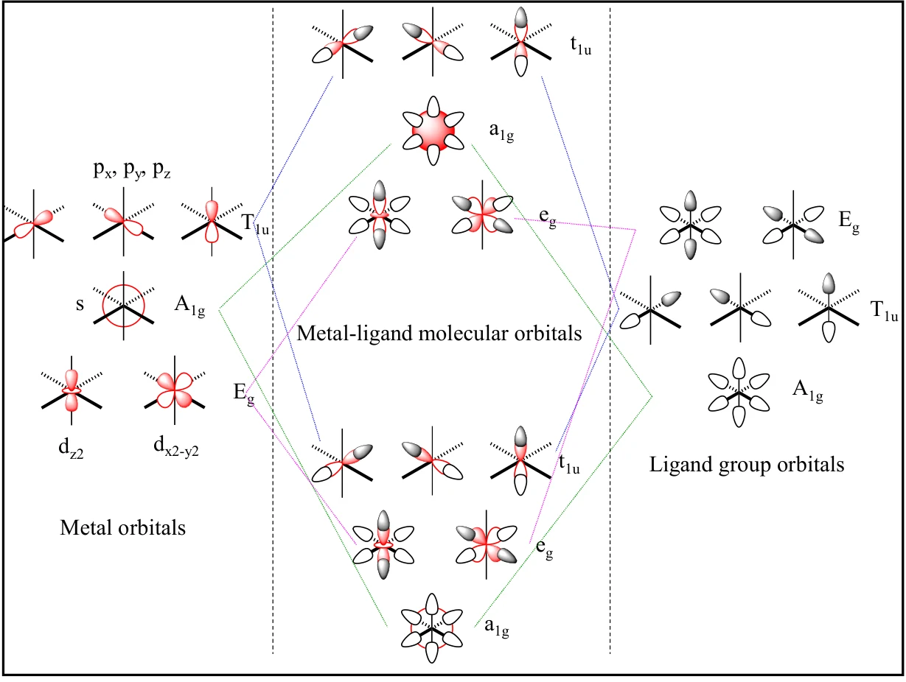
两种计数不要混用：dn 是金属离子 d 电子数，不是整个配合物的价电子总数。例如 W(CO)6 中 CO 为中性、W 为 0 价，W 的 d 计数为 d6；六个 CO 的 σ 给电子对还提供另外 12 个电子。
金属 d 计数通常由族序数减去氧化态得到。例如 Fe2+ 为 d6、Cu2+ 为 d9。先确定配体电荷和金属氧化态，再填能级。
DELTA VERSUS PAIRING ENERGY
5. Δₒ 与配对能：何时高自旋、何时低自旋？
八面体 d 型能级间距记作 Δo = ε(eg*) − ε(t2g)。电子是在较低能级配对，还是提升到较高能级保持不成对，取决于分裂能与有效配对能 P 的竞争。在本课的简化模型中，Δo > P 倾向低自旋，Δo < P 倾向高自旋。
常规理想八面体模型只有 d4 至 d7 存在两套通常所说的高、低自旋排布；d0–d3 和 d8–d10 不应人为各造一套。
| d 计数 | 高自旋：排布；未成对数 | 低自旋：排布；未成对数 |
|---|---|---|
| d⁴ | t₂g³eg*¹；4 | t₂g⁴；2 |
| d⁵ | t₂g³eg*²；5 | t₂g⁵；1 |
| d⁶ | t₂g⁴eg*²；4 | t₂g⁶；0 |
| d⁷ | t₂g⁵eg*²；3 | t₂g⁶eg*¹；1 |
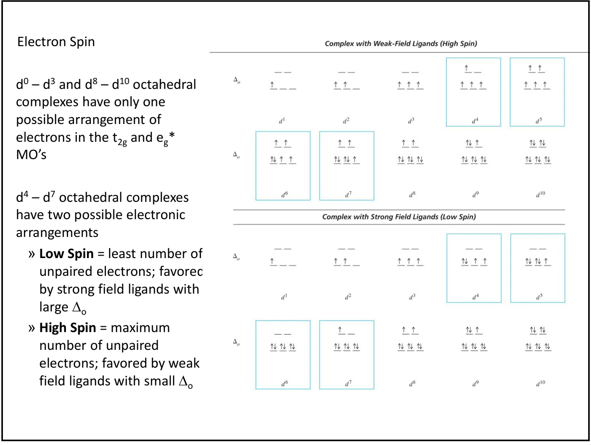
比较条件相近的配合物时，较高金属氧化态通常增大 Δo；4d、5d 金属较伸展的轨道通常使分裂更大、配对代价相对减小，低自旋更常见。这些是趋势，不是脱离金属、配体和几何仍成立的绝对规则。
例：两个 Fe(II) 八面体
[Fe(H2O)6]2+ 与 [Fe(CN)6]4− 都是 d6。前者通常为高自旋，有 4 个未成对电子；后者为低自旋，全部配对。不能只凭“都是 Fe(II)”判断磁性。
LIGAND FIELD STABILIZATION
6. LFSE：先数占据，再单独处理配对能
以五个 d 型能级的重心为零点，每个 t2g 电子贡献 −0.4Δo，每个 eg* 电子贡献 +0.6Δo。这里把 LFSE 写成带符号的能量变化：负值表示稳定化。若用正数报告“稳定化大小”，必须明确说明。
| d 计数 | 高自旋或唯一排布的 LFSE | 低自旋 LFSE（若有） |
|---|---|---|
| d⁰ | 0 | — |
| d¹ | −0.4Δₒ | — |
| d² | −0.8Δₒ | — |
| d³ | −1.2Δₒ | — |
| d⁴ | −0.6Δₒ | −1.6Δₒ |
| d⁵ | 0 | −2.0Δₒ |
| d⁶ | −0.4Δₒ | −2.4Δₒ |
| d⁷ | −0.8Δₒ | −1.8Δₒ |
| d⁸ | −1.2Δₒ | — |
| d⁹ | −0.6Δₒ | — |
| d¹⁰ | 0 | — |
d⁶ 的总能量比较
高自旋 t₂g⁴eg*² 有 1 对电子，低自旋 t₂g⁶ 有 3 对电子。若每对代价统一用 P 近似，则 ELS − EHS = −2Δo + 2P。取 Δo = 200 kJ mol−1、P = 150 kJ mol−1，差值为 −100 kJ mol−1，低自旋更有利。
未成对电子通常导致顺磁性；全部配对则为反磁性。LFSE 是理解磁性和光谱的基础，但不能独自给出完整吸收光谱：多电子项、选择定则与共价性也会影响谱带。
OCTAHEDRAL · PI
7. π 相互作用为什么会改变 t₂g？
每个八面体配体还有两个垂直于金属–配体轴的 π 型轨道，六个配体共给出 12 个基函数：
纯 σ 模型里 t2g 非键，是因为缺少 σ 对称性匹配；加入配体 π 轨道后，非键这一结论不再普遍成立。T1g、T2u 在所选金属 s、p、d 基组中无匹配者；T1u 对称上允许与金属 p 轨道混合，入门简图常因能量和重叠条件而忽略，不能说“p 轨道用过一次就绝不能再混合”。
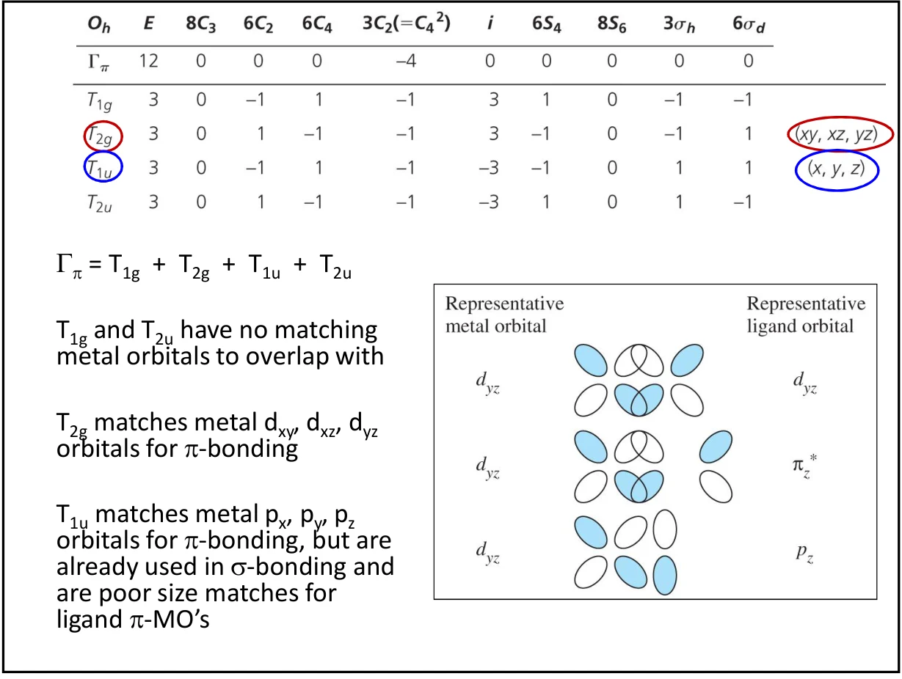
DONATION AND BACKBONDING
8. π 受体增大分裂，π 给体减小分裂
CO：σ 给体，同时是 π 受体
CO 的碳端 σ 给体轨道向金属供电子；较低的空 π* 轨道接受金属 d 电子密度，产生金属→配体的 π 反馈键。金属 t2g 与较高能的配体 π* 混合后，较低的新成键组合通常仍以金属成分为主，因此金属 d 型 t2g 降低，Δo 增大，低自旋更有利。
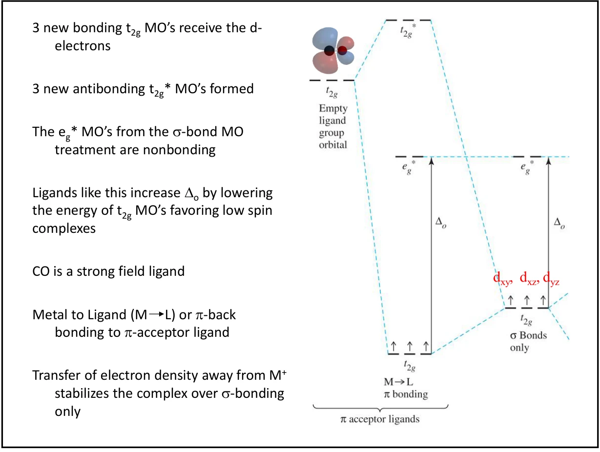
这里 eg* 对新增 π 作用近似非键，但它仍然是 σ 反键轨道。CO π* 接受电子也使 C–O 键趋于减弱；这一点连接第 05 课的反馈成键讨论。
F⁻：填满的 π 给体轨道
F− 等配体的已占据 p 型 π 轨道通常低于金属 d 能级。相互作用后，较低的成键组合主要由配体电子填充，较高的金属型 t2g* 则被推高。于是金属 d 型分裂减小，弱场与高自旋倾向增强。
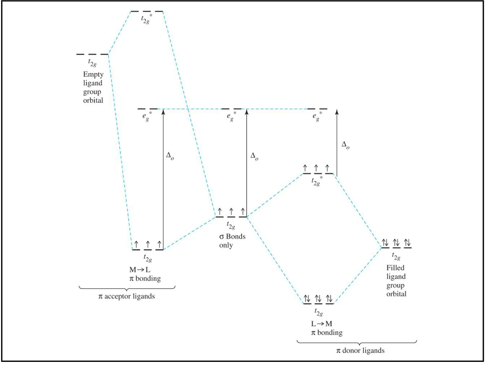
| 配体 π 性质 | 金属型 t₂g 的变化 | 对 Δₒ 的典型影响 |
|---|---|---|
| π 受体，如 CO | 与空 π* 混合后降低 | 增大 |
| π 给体，如 F⁻、Cl⁻ | 与已占据 π 轨道混合后升高 | 减小 |
| 主要 σ 给体的简化参照 | t₂g 近似非键 | 由 σ 相互作用建立基准 |
比较应固定其余条件。CN− 虽有已占据配体轨道，也常表现为强场 π 受体；不能因为它有孤对电子就把它整体归为弱场 π 给体。完整 MO 包含多种相互作用，简图只保留主导效应。
DEGENERACY AND DISTORTION
9. Jahn–Teller 效应：从电子简并到几何畸变
对于非线性分子，轨道简并的电子基态可通过降低对称性的畸变解除简并并降低能量。课件的“简并轨道不等占据被禁止”是过强的简写，不是电子填充禁则；真正判据涉及电子态的轨道简并。
理想八面体 Cu(II) 是 d9：t₂g⁶eg*³。eg* 的不等占据常产生明显的四方畸变，许多 Cu(II) 配合物表现为轴向拉长。轴向作用减弱时，含 z 方向成分的轨道相对降低，原来的简并被解除。
高自旋 d4、低自旋 d7 也常有较强的 eg 型 Jahn–Teller 倾向。某些 t2g 简并占据可产生较弱畸变，不能仅凭一个简并轨道盒图判断所有情形。
Jahn–Teller 定理不唯一规定拉长还是压缩，更不表示所有 d⁹ 配合物都必须成为平面正方形。轴向配体逐渐远离可用来理解八面体到平面正方形的能级关联，但实际稳定几何还受成键与空间因素共同决定。
SQUARE PLANAR · D4H
10. 平面正方形：四个 SALC 与 d⁸ 的能级优势
四个相同配体位于 ±x、±y，z 垂直分子平面，点群为 D4h。四个 σ 给体轨道的分解是 Γσ = A1g + B1g + Eu，维数为 1 + 1 + 2 = 4。
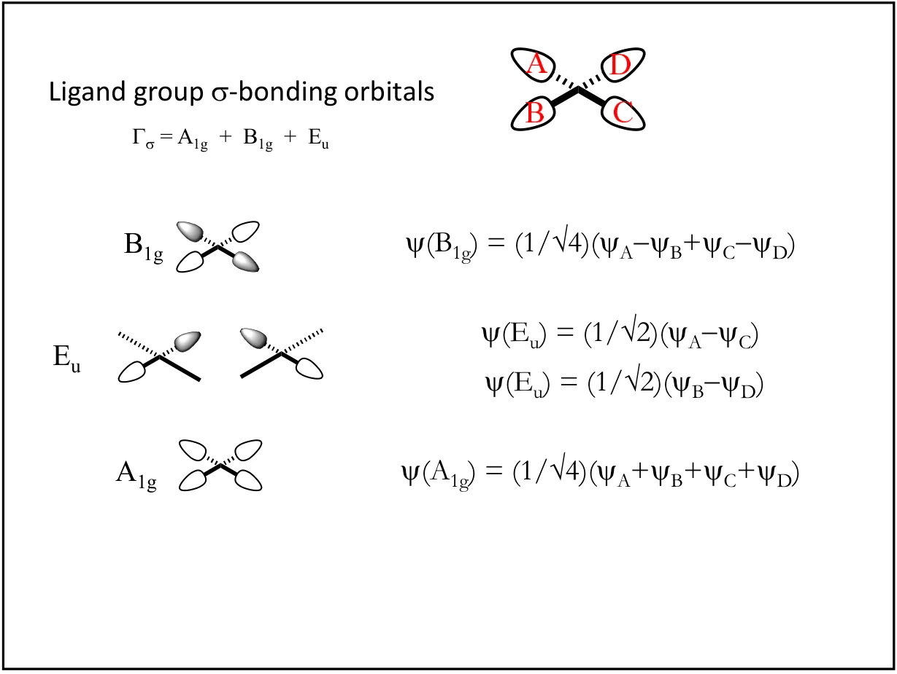
| 金属轨道 | D4h 对称性 | 纯 σ 模型中的匹配 |
|---|---|---|
| s、dz² | A1g | 两个金属基函数可同时参与同一对称性块 |
| dx²−y² | B1g | 朝向四个配体，强 σ 反键 MO 通常最高 |
| px、py | Eu | 匹配两个平面内差组合 |
| dxy | B2g | 纯 σ 下近似非键，可参与 π 作用 |
| dxz、dyz | Eg | 纯 σ 下近似非键，可参与 π 作用 |
| pz | A2u | 无对应的四配体 σ SALC |
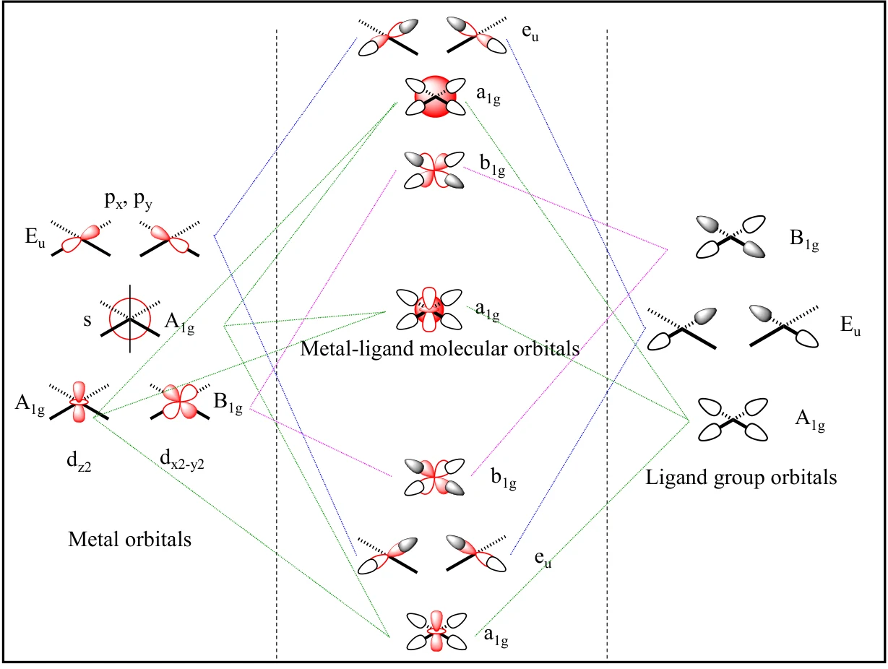
A1g 块含两个金属轨道和一个配体 SALC，因此是三个基函数共同混合，不能一律当成独立的“两个轨道变成两个 MO”。最高的金属 d 型 σ 反键能级通常是 b1g*，主要来自 dx²−y²。
d8 若有足够大的能隙，八个 d 电子可在其余四个较低 d 型轨道成对占据，避开最高反键轨道，因而常见低自旋、反磁性的平面正方形结构。不过，d⁸ 不自动等于平面正方形；Ni(II) 的弱场四面体配合物就是重要对照。
加入 π 轨道后的修正
四个配体各有一个平面外和一个平面内 π 轨道，分别给出 A2u + B2u + Eg，以及 A2g + B2g + Eu。其中 B2g 可匹配 dxy，Eg 可匹配 dxz、dyz。较低 d 能级的相对顺序可随 π 成键改变，不应把一张示意图当作所有配合物的固定顺序。
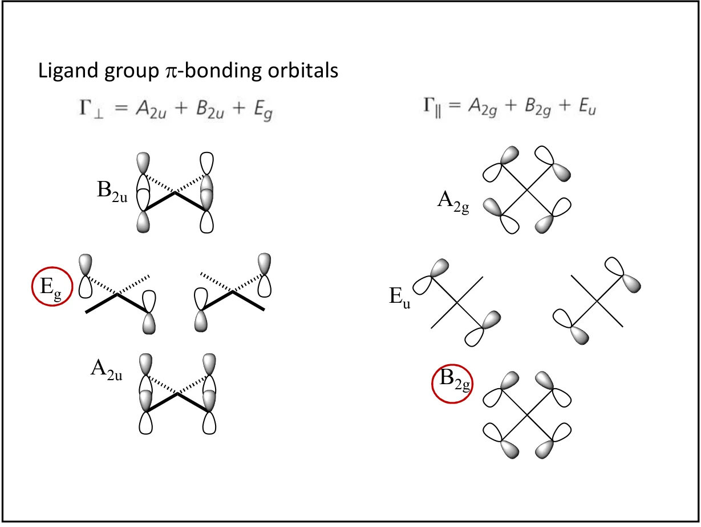
TETRAHEDRAL · TD
11. 四面体：为什么 e 在下、t₂ 在上？
理想四面体为 Td，没有反演中心，故写 e、t2，不带 g 下标。四个配体的 σ SALC 分解为 A1 + T2；金属 s 属 A1，p 以及 dxy、dxz、dyz 属 T2。dz²、dx²−y² 属 E，在纯 σ 模型中缺少匹配。
因此金属 d 型 t2 反键组相对较高，e 组较低，与八面体 d 组顺序相反。四面体分裂 Δt 通常较小，常见 3d 四面体配合物多为高自旋。
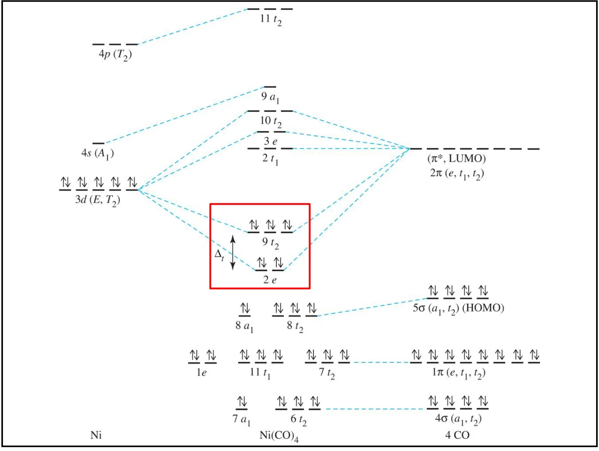
π 作用也能改变四面体能级，方向取决于配体轨道能量与占据；课件的“π 成键加强分裂”不宜无条件推广。例：[NiCl4]2− 为 d8、常见四面体，e⁴t₂⁴ 有 2 个未成对电子；[Ni(CN)4]2− 则常见平面正方形、反磁性。
REVIEW AND SOURCE CORRECTIONS
12. 解题流程与课件校勘
- 先定构型、坐标和 d 计数。
从配体电荷计算氧化态，再数 d 电子；不要把配体给电子对混进 dⁿ。
- 先 σ 后 π。
数 SALC 维数，匹配相同不可约表示，再按配体轨道的能量与占据确定能级移动。
- 填电子后讨论能量和磁性。
八面体 d⁴–d⁷ 比较 Δₒ 与 P；计算 LFSE 时声明是否另计配对能，最后数未成对电子。
| 课件位置 | 阅读版采用的校正或边界 |
|---|---|
| PDF 第 4 页 | “所有八面体图完全相同”限于共同的理想对称性框架，不推广到实际能级参数。 |
| PDF 第 9 页 | eg* 只对所加 π 作用近似非键，对 σ 键仍反键。 |
| PDF 第 12 页 | Jahn–Teller 涉及轨道简并电子态，不写成电子占据禁则。 |
| PDF 第 14 页 | 按 x、y 沿配体方向的标准坐标，dxy 属 B2g，不是 B1g。 |
| PDF 第 15 页 | 最高 d 型 σ 反键轨道为 b1g*，不是 a2u；CN⁻ 不笼统列作弱场 π 给体。 |
| PDF 第 16 页 | π 成键对分裂的方向需结合配体能量与占据，不作无条件结论。 |
本专题双语词条：配体场分子轨道模型 · 八面体分裂能 · 配对能 · 配体场稳定化能 · 高自旋与低自旋 · π 受体配体 · π 给体配体 · Jahn–Teller 畸变 · 平面正方形配体场 · 四面体配体场
对称性标签校对参考：Frank Rioux：D4h 特征标表及基函数（B1g 对应 x²−y²，B2g 对应 xy，A2u 对应 z）。原图保持课件内容；上述文字校正优先于课件中的简写与笔误。
PRACTICE · 22 QUESTIONS
13. 专题测验
22 题，共 32 分。覆盖轨道匹配、MO 数目、自旋与 LFSE、π 给受作用及不同几何的比较，交卷后可查看答案与解析。